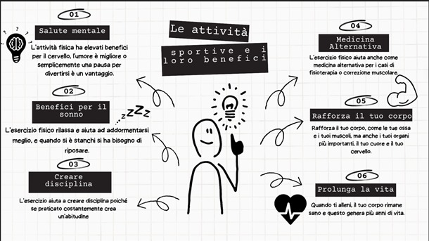

Guida 1
Fai il test CILS nella prima parte della presentazione personale. Sento che è comunque bello che non preparerò il video in questo modo, ma con un po' di vocabolario posso migliorare la mia presentazione personale e avrò una preparazione sufficiente per quando presenterò la parte attuale di CHILS. La visione dei video suggeriti ha anche aiutato ad esercitarsi nell'ascolto ea saper pronunciare le parole chiave che devono essere dette nel test. Sento che è anche importante continuare a parlare di alcuni argomenti che sono più padroneggiati di altri per poter esercitarsi a parlare fluentemente.
Guida 2
Esercizio 1:

Esercizio 2:
Durante l'analisi delle strutture di comunicazione, mi sono immerso nella comprensione degli elementi chiave che compongono una comunicazione efficace. Tuttavia, ho incontrato alcune difficoltà nel processo. Uno di questi è l'identificazione di modelli e segnali non verbali nella comunicazione. Per superare questa sfida, ho dedicato del tempo allo studio della comunicazione non verbale e ho praticato l'osservazione attiva nelle situazioni quotidiane. Inoltre, ho utilizzato i video suggeriti dalle attività per ampliare le mie conoscenze e migliorare le mie capacità di analisi in questo campo.
Guida 3
Esercizio 1:
1. Ci vuole molto tempo per imparare una lingua straniera.
2. Non ci mette molto ad arrivare a casa mia, è proprio dietro l'angolo.
3. Ci vuole coraggio per affrontare le proprie paure.
4. Non ci metterò molto a preparare la cena, è un piatto semplice da cucinare.
4. Non ci metterò molto a preparare la cena, è un piatto semplice da cucinare.
Esercizio 2:
La prova orale del CILS è un momento cruciale per dimostrare le abilità comunicative in italiano. Una possibile difficoltà potrebbe essere la gestione dell'ansia durante l'esame. Per superare questo ostacolo, è consigliabile prepararsi in modo adeguato, esercitandosi con dialoghi, presentazioni e discussioni su argomenti pertinenti. Inoltre, si può cercare di simulare l'ambiente dell'esame, registrando le proprie prestazioni e valutandole in seguito. La pratica costante, insieme alla fiducia nelle proprie capacità, aiuterà a superare l'ansia e ad affrontare la prova orale con maggiore sicurezza.